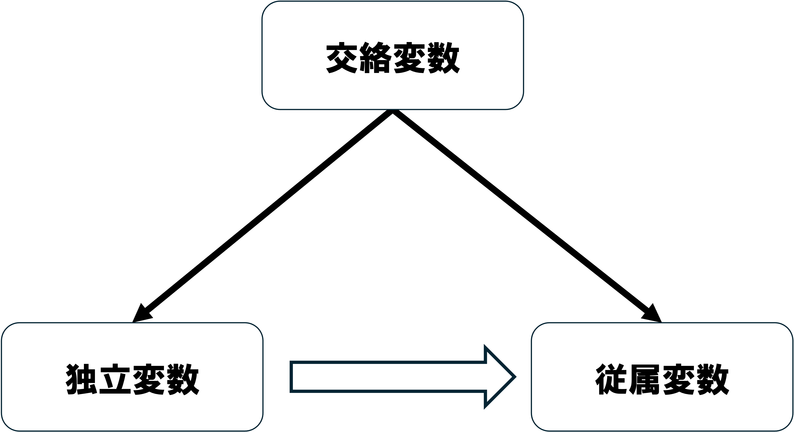
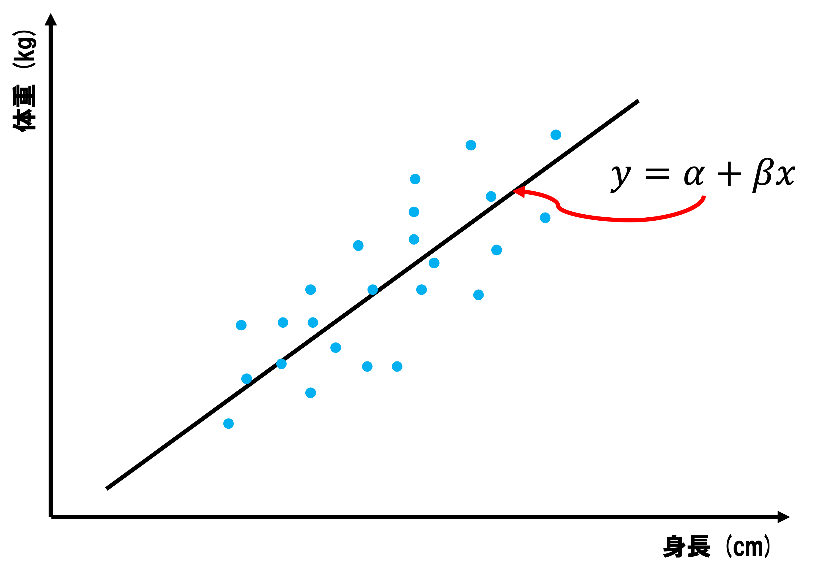

08/変数の統制
現代政治分析入門1
2026-06-09
出席登録をお願いします

今日の目次
- はじめに
- 交絡変数
- 回帰分析
- 因果推論の根本問題
- ランダム化対照実験／統計的因果推論
- まとめ
はじめに
先週のRPより (1/3)
同時性＝原因と結果の間に双方向の因果関係が存在
警察の例で従属変数が独立変数にどのように影響しているかまだ少し理解できていません。警察が増えると、犯罪率が低下する。これの同時性は犯罪率が高いと、警察が増えるということでしょうか。
「所得水準が高い国ほど、教育水準も高くなる」について、同時性があるのはなぜですか。
先週のRPより (2/3)
同時性の問題を回避して因果関係の検証を行うのが難しくできなかった。どうすれば回避できるのかがわからなかった。
内生性や同時性により因果関係に歪みが生じる問題もあります。これらによる分析結果の歪みを防ぎ、妥当性を担保するには具体的にどうアプローチすべきでしょうか？
先週のRPより (3/3)
今回のスライドがその前のスライドと少し異なっておりPDF化が出来づらいと感じるので，出来るような形にしていただけると助かります。
先生の声に対して教場が騒がしいので何とかしてほしいと思った。
本日の目的と到達目標
目的
因果関係が満たすべき要件の1つである「変数の統制」について改めて考える。「交絡変数」「因果推論の根本問題」といった問題を学び、その解決策としての実験や観察データ分析の手法の概要を知り、自分の因果推論にとって適切な方法を選べることを目指す。
到達目標
- 交絡変数とは何かを説明できる。
- 重回帰分析で交絡変数を投入した際に何が起こるのかを説明できる。
- 因果推論の根本問題とは何かを説明できる。
- 仮説に対応した、簡単なランダム化対照試験を設計できる。
- 統計的因果推論の内的妥当性および外的妥当性について議論できる。
本日の授業の位置付け

交絡変数
復習：3条件と内生性
因果関係の3条件
- 共変関係
- 原因の時間的先行
- 他の変数の統制
内生性 (endogeneity)
共変関係が観察されたとしても、本当の因果効果が歪んでしまう問題
- 同時性…原因の時間的先行がない（前回）
- 欠落変数…他の変数が統制されていない（今回）
- 観測誤差…独立変数の測定にずれ（第5回）
交絡変数 (confounding variable)

Think-pair-share (-10分)
インターネット上のウェブサイトの数と世界の風力発電量には明確な相関があります。
この2つの変数にはなぜ相関が出るのだと思いますか？
- Think (1-2分)…1人で考える
- Pair (1-2分)…ペアで共有する
- Share (2-3分)…全体に共有する（WebClassチャット）
回帰分析
回帰分析 (regression analysis)
独立変数と従属変数の関係を示すモデルを推定する分析
単回帰…独立変数が1つだけの回帰分析

重回帰…独立変数が複数の回帰分析
表7-1 TPPへの態度 (p.146)
\[ y= \alpha+\beta_{1} x_{1}+\beta_{2} x_{2}+\beta_{3} x_{3} \]
- TPPへの態度 (\(y\))…賛成=1〜反対=5
- 性別(\(x_{1}\))…男性=1、女性=2
- 年齢(\(x_{2}\))…実年齢
- 学歴(\(x_{3}\))…中卒以下=1、高卒=2、専門・短大卒=3、大卒以上=4
- \(\alpha\)は切片、\(\beta_{(\cdot)}\)はそれぞれの係数（傾き）
| B | 標準誤差 | β | t値 | 有意確率 | |
|---|---|---|---|---|---|
| （定数） | 3.413 | 0.173 | 19.693 | 0.000 | |
| 性別 | 0.271 | 0.049 | 0.102 | 5.481 | 0.000 |
| 年齢 | -0.018 | 0.002 | -0.182 | -9.821 | 0.000 |
| 学歴 | -0.076 | 0.030 | -0.048 | -2.562 | 0.000 |
表7-2 TPPへの態度 (p.147)
\[ y= \alpha+\beta_{1} x_{1}+\beta_{2} x_{2}+\beta_{3} x_{3}+\beta_{4} x_{4} \]
- 所得(\(x_{4}\))…200万円未満=1〜1400万円以上=8
| B | 標準誤差 | β | t値 | 有意確率 | |
|---|---|---|---|---|---|
| （定数） | 3.495 | 0.183 | 19.118 | 0.000 | |
| 性別 | 0.287 | 0.052 | 0.107 | 5.536 | 0.000 |
| 年齢 | -0.016 | 0.002 | -0.163 | -8.290 | 0.000 |
| 学歴 | -0.045 | 0.032 | -0.028 | -1.410 | 0.159 |
| 所得 | -0.085 | 0.014 | -0.114 | -5.854 | 0.000 |
クイズ
表7-1では確かめられていた学歴の効果が、所得を入れた表7-2では消えてしまいました。
なぜ効果が消えてしまったのでしょうか。
以下の選択肢から正しい理由を選んでください。
- TPP賛成の人ほど学歴が高くなるから
- 高学歴の人ほど所得も高い傾向があり、実際には所得がTPP態度に関係していたから
- 所得を入れるとデータ数が減るから
- 重回帰分析では、後から入れた変数の方が優先されるから
WebClassで回答
重回帰分析と因果推論
交絡変数はモデルに投入して統制可能
- 学歴の効果（\(-0.076\)→\(-0.045\)）…所得の影響を差し引き
すべての交絡因子を特定するのは不可能
同時性や測定誤差の問題は残る
因果推論の根本問題
質問
ある日あなたは風邪をひき38度の熱が出ました。
そこでおばあちゃんが手作りの薬をくれました。
これを飲んだところ、次の日には本当に36.5度まで熱が下がりました。
この薬に効果はあったと結論づけて良いでしょうか？
WebClassチャットで回答
因果推論の根本問題
因果効果を測定するためには、現実の結果と反事実の結果を比較する必要があるが、反事実の結果を観察することは決してできない1
おばあちゃんの薬の例：
- 現実＝薬を飲んだ後の体温（\(36.5\)度）
- 反事実＝薬を飲まなかった場合の体温（\(38\)度）
- 因果効果：\(38-36.5=1.5\)度
- 薬の服用以外は全く同じ状況での比較＝単位同質性がある
- 薬を飲まなかった場合の体温は観察不能
- \(?-36.5=?\)
根本問題の解決法
科学的解決…単位同質性が間違いなく確保されていると言える
- 例：アサガオのでんぷん実験
- 葉の一部を隠す→日光に当てた後ヨウ素液につける
- 隠された部分と隠されていない部分…厳密には違うが科学的には同じ
統計的解決…単位同一性のある状況を人工的に作り出す
- ランダム化対照実験 (RCT)
- 統計的因果推論
ランダム化対照実験／統計的因果推論
ランダム化対照実験
Randomized Controlled Trial (RCT)
研究対象者をランダムにグループ分けし、治療法や介入などの効果を検証する方法
新薬の治験：
- 被験者をランダムに2分割
- 一方には偽薬（プラセボ）、もう一方には本物の新薬
- プラセボ効果…偽薬でも体調に変化
- 偽薬群と新薬群で症状を比較
サーベイ実験 (survey experiment)…世論調査にRCTを組み込む
直井・久米の実験
オンラインの世論調査
- 食糧輸入／輸入一般に対する賛否
回答者1200人をランダムに以下のグループに分割
- 統制群：何も見せずに回答
- 処置群①：生産者意識を刺激する画像を見て回答
- 処置群②：消費者意識を刺激する画像を見て回答
実験刺激と結果


統計的因果推論
RCTはいつでもできるわけではない
- 金銭面のコスト
- 倫理面の問題
統計的因果推論 (statistical causal inference)
観察データから因果推論をする手法
- 実験データではないデータ
- 自然実験、差分の差分、操作変数、回帰不連続デザイン、マッチング…
RCTも統計的因果推論も内的妥当性は高いが外的妥当性が低い
- Q. 教科書（第7章）のどこで議論されている？
まとめ
本日の目的と到達目標
目的
因果関係が満たすべき要件の1つである「変数の統制」について改めて考える。「交絡変数」「因果推論の根本問題」といった問題を学び、その解決策としての実験や観察データ分析の手法の概要を知り、自分の因果推論にとって適切な方法を選べることを目指す。
到達目標
- 交絡変数とは何かを説明できる。
- 重回帰分析で交絡変数を投入した際に何が起こるのかを説明できる。
- 因果推論の根本問題とは何かを説明できる。
- 仮説に対応した、簡単なランダム化対照試験を設計できる。
- 統計的因果推論の内的妥当性および外的妥当性について議論できる。
次回までに
事後学習
- 授業資料を見直し、目標到達をセルフチェック
- WebClass 上でのリアクションペーパー入力（金曜日まで）
- コロナワクチンの「危険性」とその検証方法について（500字）
事前学習
- 教科書（久米8章）を読み、WebClass 上でのチェックフォーム記入

変数の統制